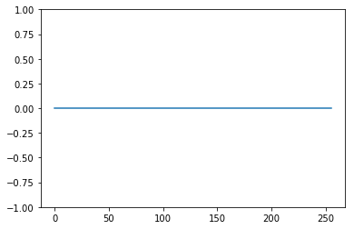

Python 3.6.0 |Anaconda custom (x86_64)| (default, Dec 23 2016, 13:19:00)
Type "copyright", "credits" or "license" for more information.
IPython 5.1.0 -- An enhanced Interactive Python.
? -> Introduction and overview of IPython's features.
%quickref -> Quick reference.
help -> Python's own help system.
object? -> Details about 'object', use 'object??' for extra details.
In [1]: runfile('/Users/BOY/PYTHON/INFREP/HW3/make_debug_graph.py', wdir='/Users/BOY/PYTHON/INFREP/HW3')
In [2]: runfile('/Users/BOY/PYTHON/INFREP/HW3/utils.py', wdir='/Users/BOY/PYTHON/INFREP/HW3')
Reloaded modules: utils, make_debug_graph
In [3]: print('PROBLEM 3.b')
...: eps = 0.05
...: N2 = 128
...: M = N2*2
...: H2 = getH(N2,4,8)
...: fg2 = getGraph(H2)
...: msg = np.zeros(M)
...: msg_sent = passMsg(msg,eps)
...: print('corrupted msg:',msg_sent, '(%d corrupted bits)'%np.sum(msg_sent))
...: #print('# of corrupted bits = %d'%np.sum(msg_sent))
...: fg2 = AddUF(fg2,msg_sent,eps)
...: pt = getPotential(fg2,ni=50)
...: print('posterior P(x_n=1):', pt[1,:])
...: msg_dec = MsgEst(pt) #decoded message
...: print('Hamming distance = %d'%Hamming(msg,msg_dec))#dist bw sent and decoded
...: plt.ylim([-1,1])
...: plt.plot(pt[1,:])
PROBLEM 3.b
corrupted msg: [ 0. 0. 0. ..., 0. 0. 0.] (10 corrupted bits)
posterior P(x_n=1): [ 0. 0. 0. ..., 0. 0. 0.]
Hamming distance = 0
Traceback (most recent call last):
File "<ipython-input-3-3bf2b68e70d3>", line 16, in <module>
plt.ylim([-1,1])
NameError: name 'plt' is not defined
In [4]: from utils import *
...: from make_debug_graph import *
...: import matplotlib.pyplot as plt
...: from PIL import Image
In [5]: print('PROBLEM 3.b')
...: eps = 0.05
...: N2 = 128
...: M = N2*2
...: H2 = getH(N2,4,8)
...: fg2 = getGraph(H2)
...: msg = np.zeros(M)
...: msg_sent = passMsg(msg,eps)
...: print('corrupted msg:',msg_sent, '(%d corrupted bits)'%np.sum(msg_sent))
...: #print('# of corrupted bits = %d'%np.sum(msg_sent))
...: fg2 = AddUF(fg2,msg_sent,eps)
...: pt = getPotential(fg2,ni=50)
...: print('posterior P(x_n=1):', pt[1,:])
...: msg_dec = MsgEst(pt) #decoded message
...: print('Hamming distance = %d'%Hamming(msg,msg_dec))#dist bw sent and decoded
...: plt.ylim([-1,1])
...: plt.plot(pt[1,:])
PROBLEM 3.b
corrupted msg: [ 0. 1. 0. ..., 1. 1. 0.] (17 corrupted bits)
Traceback (most recent call last):
File "<ipython-input-5-3bf2b68e70d3>", line 12, in <module>
pt = getPotential(fg2,ni=50)
File "/Users/BOY/PYTHON/INFREP/HW3/utils.py", line 109, in getPotential
bel=GetBeliefs(fg, ni, vnodes)
NameError: name 'GetBeliefs' is not defined
In [6]: runfile('/Users/BOY/PYTHON/INFREP/HW3/make_debug_graph.py', wdir='/Users/BOY/PYTHON/INFREP/HW3')
Reloaded modules: make_debug_graph, utils
In [7]: runfile('/Users/BOY/PYTHON/INFREP/HW3/utils.py', wdir='/Users/BOY/PYTHON/INFREP/HW3')
Reloaded modules: utils, make_debug_graph
In [8]: print('PROBLEM 3.b')
...: eps = 0.05
...: N2 = 128
...: M = N2*2
...: H2 = getH(N2,4,8)
...: fg2 = getGraph(H2)
...: msg = np.zeros(M)
...: msg_sent = passMsg(msg,eps)
...: print('corrupted msg:',msg_sent, '(%d corrupted bits)'%np.sum(msg_sent))
...: #print('# of corrupted bits = %d'%np.sum(msg_sent))
...: fg2 = AddUF(fg2,msg_sent,eps)
...: pt = getPotential(fg2,ni=50)
...: print('posterior P(x_n=1):', pt[1,:])
...: msg_dec = MsgEst(pt) #decoded message
...: print('Hamming distance = %d'%Hamming(msg,msg_dec))#dist bw sent and decoded
...: plt.ylim([-1,1])
...: plt.plot(pt[1,:])
PROBLEM 3.b
corrupted msg: [ 0. 0. 0. ..., 0. 0. 0.] (10 corrupted bits)
posterior P(x_n=1): [ 0. 0. 0. ..., 0. 0. 0.]
Hamming distance = 0
Out[8]: [<matplotlib.lines.Line2D at 0x11b758978>]

In [9]: